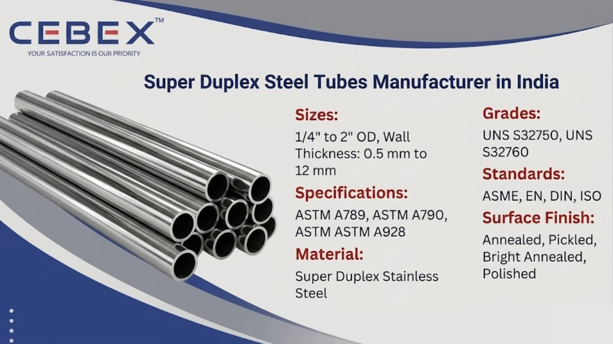

Leading Manufacturer & Exporter of Super Duplex Tubes
In demanding industrial environments where extreme corrosion resistance and high strength are essential, material selection becomes critical. As a leading Super Duplex Tube Manufacturer in India, CEBEX STEEL INDIA delivers high-performance tubes engineered for superior durability, mechanical strength, and resistance to aggressive environments.
Super Duplex stainless steel combines enhanced austenitic and ferritic structures, offering significantly higher strength and improved resistance to pitting, crevice corrosion, and chloride stress corrosion cracking compared to standard duplex grades. These properties make Super Duplex tubes ideal for offshore, marine, chemical, and oil & gas industries.
Our advanced manufacturing facility ensures precise dimensional accuracy, superior surface finish, and compliance with international standards such as ASTM, ASME, EN, and DIN.

Choosing the right supplier ensures long-term performance and reliability. CEBEX STEEL INDIA is known for manufacturing as per ASTM A789, ASTM A790, ASTM A928, high-strength materials with excellent corrosion resistance, advanced testing including PMI, hydrostatic, ultrasonic, eddy current, EN 10204 3.1 / 3.2 Mill Test Certification, and strong export capabilities across Africa, Middle East, Europe, and Asia.
Our team provides technical support for material selection and project-specific requirements.
| Feature | Specification / Detail |
|---|---|
| Product Type | Super Duplex Stainless Steel Tubes |
| Specifications | ASTM A789, ASTM A790, ASTM A928 |
| Grades | UNS S32750, UNS S32760 |
| Types | Seamless, Welded, ERW, EFW |
| Size Range | ?" OD to 2" OD |
| Wall Thickness | 0.5 mm to 12 mm |
| Standards | ASME, EN, DIN, ISO |
| Surface Finish | Annealed, Pickled, Bright Annealed, Polished |
These tubes offer exceptional corrosion resistance, high tensile strength, and excellent performance in extreme conditions.
We manufacture seamless tubes for high-pressure and critical applications, as well as welded tubes for structural and general industrial use. Our product range includes heat exchanger tubes, condenser tubes, instrumentation tubes, and custom-engineered tubes as per project specifications. All tubes are produced with strict tolerance control to ensure performance in complex industrial systems.
| Grade | Common Name | Applications |
|---|---|---|
| UNS S32750 | Super Duplex 2507 | Offshore, marine, desalination |
| UNS S32760 | Super Duplex | Oil & gas, chemical processing |
| Category | Standards |
|---|---|
| Tube Standards | ASTM A789, A790, A928 |
| ASME Standards | ASME SA789, SA790 |
| International Standards | EN, DIN, ISO |
| Grade | C | Mn | Si | P | S | Cr | Ni | Mo | N |
|---|---|---|---|---|---|---|---|---|---|
| S32750 | 0.03 | 1.20 | 0.80 | 0.035 | 0.020 | 24–26 | 6–8 | 3–5 | 0.24–0.32 |
| S32760 | 0.03 | 1.00 | 1.00 | 0.030 | 0.010 | 24–26 | 6–8 | 3–4 | 0.20–0.30 |
| Grade | Tensile Strength (MPa) | Yield Strength (MPa) | Elongation (%) | Hardness (HB) |
|---|---|---|---|---|
| S32750 | 800 | 550 | 15 | 310 |
| S32760 | 750 | 550 | 25 | 300 |
| Size (OD) | Thickness (mm) | Weight (kg/m) |
|---|---|---|
| ?" | 2.77 | 1.27 |
| 1" | 3.38 | 2.68 |
| 2" | 3.91 | 5.44 |
Custom sizes and specifications are available as per project requirements.
Super Duplex tubes are widely used in industries where extreme corrosion resistance and strength are required. These include offshore platforms, oil & gas pipelines, desalination plants, marine systems, and chemical processing units. Their superior resistance to chloride environments and high mechanical strength make them ideal for harsh operating conditions.
All Super Duplex tubes undergo strict testing including PMI testing, hydrostatic testing, ultrasonic inspection, eddy current testing, and mechanical testing. Each product is supplied with EN 10204 3.1 / 3.2 certification ensuring full traceability and compliance with international standards.
Products are packed using export-grade materials such as wooden boxes and bundles to prevent damage during transit. Each tube is marked with grade, size, and heat number. We provide complete export documentation including invoices, packing list, mill test certificates, and certificate of origin.
As a leading Super Duplex Tube Manufacturer in India, we have established a strong export presence across African markets. Our export team ensures smooth logistics, proper documentation, and timely delivery. Our tubes are widely supplied to Nigeria, Egypt, Kenya, South Africa, and other regions for industrial and infrastructure projects. Visit our Africa Super Duplex Tube Exporter page.
We offer a comprehensive range of high-performance industrial tubes designed to meet diverse application requirements across industries.
| Tube Type | Description |
|---|---|
| SS Tube | General-purpose stainless steel tubes for industrial applications |
| Duplex 2205 Tube | High-strength duplex tubes with superior corrosion resistance |
| Nickel Alloy Tube | High-temperature and corrosion-resistant alloy tubes |
| Inconel Tube | Heat-resistant tubes for critical and high-temperature applications |
| Monel Tube | Nickel-copper alloy tubes suitable for marine and chemical use |
| Hastelloy Tube | Advanced tubes with exceptional resistance to aggressive chemicals |
| Titanium Tube | Lightweight, high-strength tubes with excellent corrosion resistance |
| Copper Tube | High thermal and electrical conductivity tubes for HVAC and plumbing |
| Carbon Steel Tube | Tubes for structural, mechanical, and pressure applications |
| Alloy Steel Tube | Engineered alloy steel tubes designed to perform reliably under extreme pressure and elevated temperature conditions |
| 254 SMO Tubes | Super austenitic tubes for highly aggressive environments |
CEBEX STEEL INDIA delivers consistent quality, competitive pricing, and reliable global supply. Our engineering expertise ensures accurate material selection and full compliance with international standards.
Super Duplex is a high-alloy stainless steel offering superior strength and corrosion resistance compared to standard duplex grades.
They comply with ASTM A789, ASTM A790, ASME, EN, and DIN standards.
Super Duplex has higher chromium, molybdenum, and nitrogen content, providing better corrosion resistance and strength.
Yes, they are widely used in offshore and marine environments due to their resistance to seawater corrosion.
Yes, all products come with EN 10204 3.1 / 3.2 Mill Test Certificates.
We supply tubes from ?" OD to 2" OD with custom thickness options.
Yes, we export worldwide with complete logistics and documentation support.